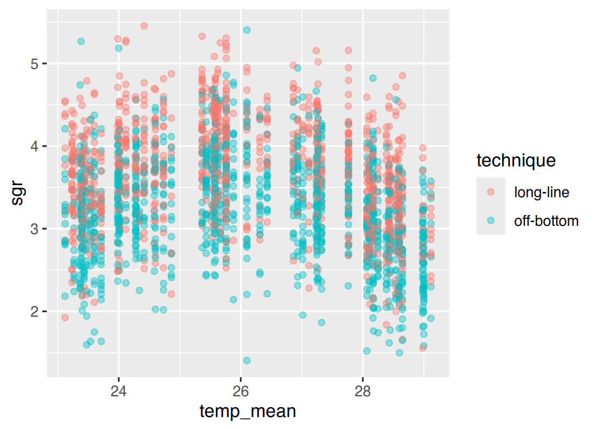
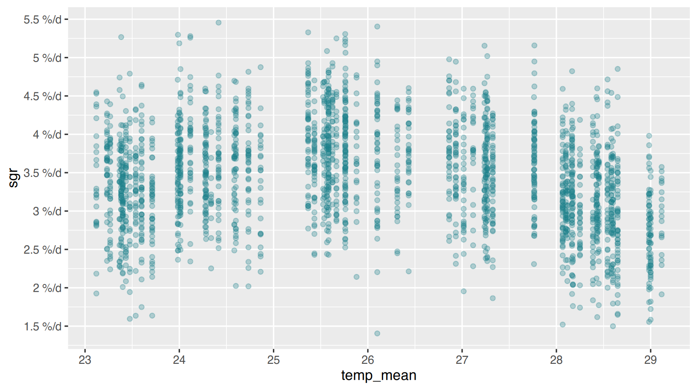
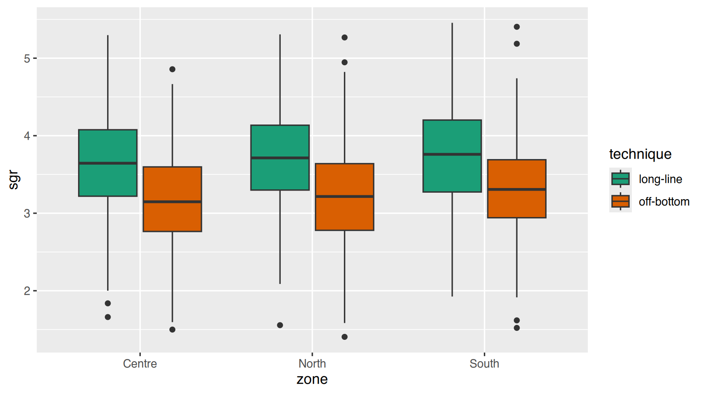
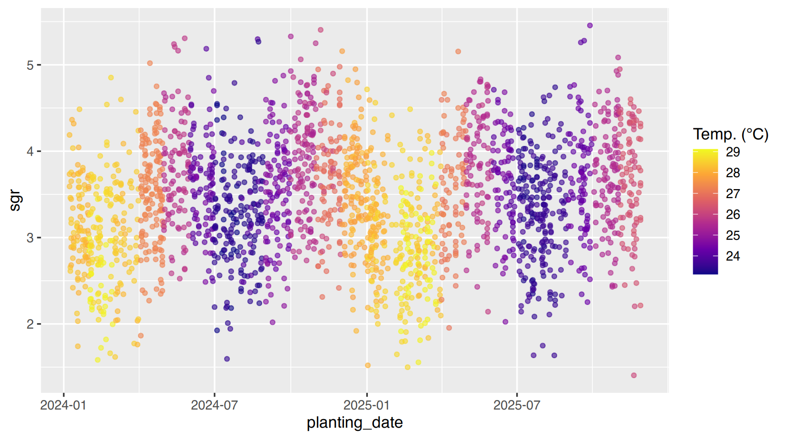
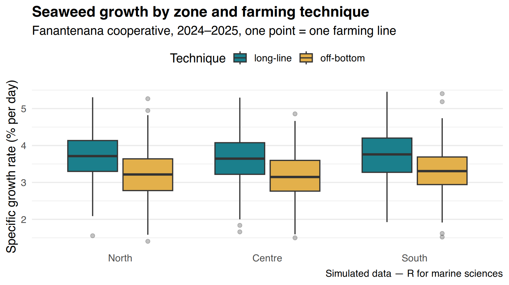
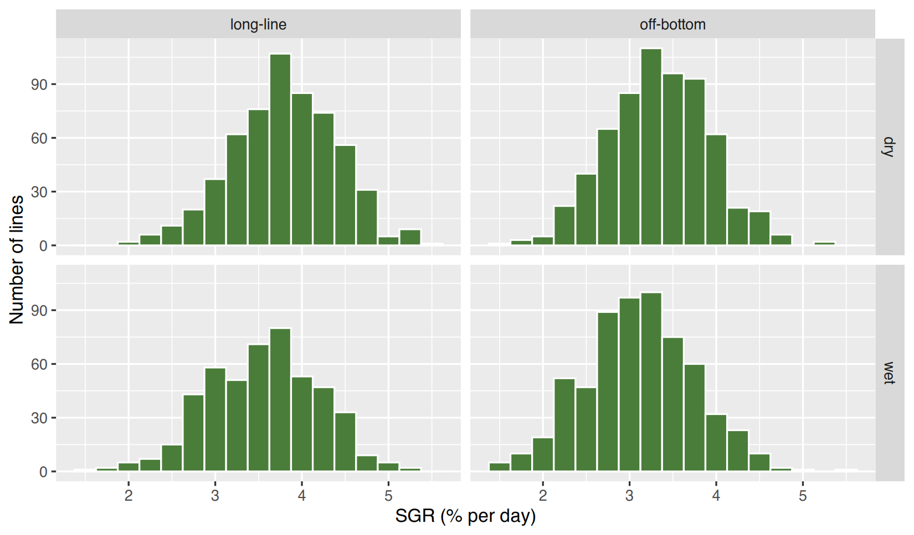

I7 · Mastering ggplot2 (1): scales, colours, themes, facetsI7 · Maîtriser ggplot2 (1) : échelles, couleurs, thèmes, panneaux
~3 h
By the end of this session you will be able to
- tell mapping (
aes(), linked to data) from setting (a fixed value) of colours, sizes and shapes; - control axes: limits, breaks, labels, log scales, zooming without losing data;
- choose colour palettes that are clear, printable and readable by colour-blind people;
- write complete labels (title, subtitle, caption, units) and adjust the theme;
- split a graph into panels with
facet_wrap()andfacet_grid().
À la fin de cette séance vous saurez
- distinguer associer (
aes(), lié aux données) et fixer (une valeur constante) les couleurs, tailles et formes ; - contrôler les axes : limites, graduations, étiquettes, échelles logarithmiques, zoom sans perdre de données ;
- choisir des palettes de couleurs claires, imprimables et lisibles par les daltoniens ;
- écrire des étiquettes complètes (titre, sous-titre, légende, unités) et ajuster le thème ;
- découper un graphique en panneaux avec
facet_wrap()etfacet_grid().
⇩ checkpoint: I3_seaweed_analysis.csv ⇩ checkpoint: I2_water_quality_clean.csv
Reminder of the grammar (Beginner, Session 8):
ggplot(data, aes(x, y, colour = ...)) + geom_*() + scale_*() + labs() + theme_*() + facet_*().
This session is about the last four layers: they turn a correct graph
into a clear graph.
Rappel de la grammaire (Débutant, séance 8) :
ggplot(données, aes(x, y, colour = ...)) + geom_*() + scale_*() + labs() + theme_*() + facet_*().
Cette séance porte sur les quatre dernières couches : elles transforment
un graphique correct en graphique clair.
Mapping or setting?Associer ou fixer ?
- Inside
aes(): the colour depends on a column → a legend is created. - Outside
aes(): the colour is the same for every point → no legend.
A classic mistake is aes(colour = "blue"): ggplot treats
“blue” as a category called “blue” and draws it in red with a
legend.
- Dans
aes(): la couleur dépend d’une colonne → une légende est créée. - Hors de
aes(): la couleur est la même pour tous les points → pas de légende.
Erreur classique : aes(colour = "blue") : ggplot traite
« blue » comme une catégorie appelée « blue » et la dessine en rouge
avec une légende.
mapping

alpha (0 = transparent, 1 = opaque) reveals where points
overlap: essential with 2 000+ points.
alpha (0 = transparent, 1 = opaque) révèle où les points
se superposent : indispensable avec plus de 2 000 points.
Axes: limits, breaks, labelsAxes : limites, graduations, étiquettes
Every aesthetic has a scale:
scale_x_continuous(), scale_y_continuous(),
scale_x_discrete(), scale_x_date()… Their main
arguments: breaks (where the ticks are),
labels (what they say), limits (range),
expand (space around the data).
Chaque esthétique a une échelle :
scale_x_continuous(), scale_y_continuous(),
scale_x_discrete(), scale_x_date()… Leurs
arguments principaux : breaks (position des graduations),
labels (ce qu’elles affichent), limits
(étendue), expand (espace autour des données).
ggplot(seaweed, aes(temp_mean, sgr)) +
geom_point(alpha = 0.3, colour = "#1b7f8c", na.rm = TRUE) +
scale_x_continuous(breaks = seq(23, 30, by = 1)) +
scale_y_continuous(breaks = seq(1, 6, by = 0.5),
labels = function(v) paste0(v, " %/d")) # custom labels
Zoom or cut?
scale_y_continuous(limits = c(2, 5))
removes the points outside the range before
any calculation (a boxplot or a mean would change!).
coord_cartesian(ylim = c(2, 5)) only
zooms: all data are kept. To zoom, use
coord_cartesian().
Zoomer ou couper ?
scale_y_continuous(limits = c(2, 5))
supprime les points hors de l’intervalle avant
tout calcul (un boxplot ou une moyenne changerait !).
coord_cartesian(ylim = c(2, 5)) ne fait que
zoomer : toutes les données sont gardées. Pour zoomer,
utilisez coord_cartesian().
Log scale for right-skewed variables such as turbidity or income: equal distances represent equal ratios.
Échelle logarithmique pour les variables asymétriques comme la turbidité ou le revenu : des distances égales représentent des rapports égaux.
turb <- subset(wq_tidy, parameter == "turbidity_NTU")
ggplot(turb, aes(station, value)) +
geom_boxplot(fill = "#a8d5da") +
scale_y_log10(breaks = c(1, 2, 5, 10, 20)) +
labs(x = NULL, y = "Turbidity (NTU, log scale)")
Colours that work for everyoneDes couleurs qui marchent pour tout le monde
About 1 man in 12 does not distinguish red from green. Reports are also often printed in grey. Three good choices:
| Data | Palette | Function |
|---|---|---|
| categories (sites, techniques) | qualitative, few colours | scale_colour_brewer(palette = "Dark2"),
scale_fill_manual(values = c(...)) |
| a continuous value (temperature, cover) | sequential, colour-blind safe | scale_colour_viridis_c(),
scale_fill_viridis_c(option = "mako") |
| a value around a centre (anomaly, change) | diverging | scale_fill_distiller(palette = "RdBu"),
scale_fill_gradient2() |
Use fill for areas (bars, boxes, polygons) and
colour for points and lines.
Environ 1 homme sur 12 ne distingue pas le rouge du vert. Les rapports sont aussi souvent imprimés en gris. Trois bons choix :
| Données | Palette | Fonction |
|---|---|---|
| catégories (sites, techniques) | qualitative, peu de couleurs | scale_colour_brewer(palette = "Dark2"),
scale_fill_manual(values = c(...)) |
| une valeur continue (température, couverture) | séquentielle, adaptée aux daltoniens | scale_colour_viridis_c(),
scale_fill_viridis_c(option = "mako") |
| une valeur autour d’un centre (anomalie, variation) | divergente | scale_fill_distiller(palette = "RdBu"),
scale_fill_gradient2() |
Utilisez fill pour les surfaces (barres, boîtes,
polygones) et colour pour les points et les lignes.
ggplot(seaweed, aes(zone, sgr, fill = technique)) +
geom_boxplot(na.rm = TRUE) +
scale_fill_brewer(palette = "Dark2")
ggplot(seaweed, aes(planting_date, sgr, colour = temp_mean)) +
geom_point(alpha = 0.6, size = 1.2, na.rm = TRUE) +
scale_colour_viridis_c(option = "plasma", name = "Temp. (°C)")
To force the order of categories (e.g. North → South), set factor
levels before plotting:
seaweed$zone <- factor(seaweed$zone, levels = c("North", "Centre", "South")).
Pour imposer l’ordre des catégories (ex. Nord → Sud), fixez les
niveaux du facteur avant de tracer :
seaweed$zone <- factor(seaweed$zone, levels = c("North", "Centre", "South")).
Labels and themesÉtiquettes et thèmes
A figure must be understandable alone: say
what, where, when and in which unit.
labs() sets the title, subtitle, caption, axis and legend
titles. theme_*() changes the overall look;
theme() adjusts any detail.
Une figure doit être compréhensible seule : dire
quoi, où, quand et dans quelle
unité. labs() fixe le titre, le sous-titre, la source,
les titres d’axes et de légende. theme_*() change l’aspect
général ; theme() ajuste n’importe quel détail.
seaweed$zone <- factor(seaweed$zone, levels = c("North", "Centre", "South"))
ggplot(seaweed, aes(zone, sgr, fill = technique)) +
geom_boxplot(na.rm = TRUE, outlier.alpha = 0.3) +
scale_fill_manual(values = c("long-line" = "#1b7f8c", "off-bottom" = "#e3b04b")) +
labs(title = "Seaweed growth by zone and farming technique",
subtitle = "Fanantenana cooperative, 2024–2025, one point = one farming line",
caption = "Simulated data — R for marine sciences",
x = NULL, y = "Specific growth rate (% per day)", fill = "Technique") +
theme_minimal(base_size = 13) +
theme(legend.position = "top",
plot.title = element_text(face = "bold"),
panel.grid.major.x = element_blank())
theme() element |
Controls | Example |
|---|---|---|
legend.position |
where the legend is | "top", "none",
c(0.9, 0.2) |
axis.text.x |
text of the x ticks | element_text(angle = 45, hjust = 1) |
panel.grid.minor |
minor grid lines | element_blank() (remove) |
plot.title |
title | element_text(size = 16, face = "bold") |
strip.text |
titles of facets | element_text(face = "italic") |
Élément de theme() |
Contrôle | Exemple |
|---|---|---|
legend.position |
position de la légende | "top", "none",
c(0.9, 0.2) |
axis.text.x |
texte des graduations x | element_text(angle = 45, hjust = 1) |
panel.grid.minor |
lignes de grille secondaires | element_blank() (supprimer) |
plot.title |
titre | element_text(size = 16, face = "bold") |
strip.text |
titres des panneaux | element_text(face = "italic") |
Panels: facet_wrap() and facet_grid()Panneaux : facet_wrap() et facet_grid()
facet_wrap(~ variable) makes one panel per category.
With the long water-quality table (Session I2), one
line of code draws the five parameters — each with its own y-axis thanks
to scales = "free_y".
facet_wrap(~ variable) fait un panneau par catégorie.
Avec le tableau long de qualité de l’eau (séance I2),
une ligne de code trace les cinq paramètres — chacun avec son propre axe
y grâce à scales = "free_y".
ggplot(wq_tidy, aes(date, value)) +
geom_point(size = 0.5, alpha = 0.4, colour = "#0b3d5c", na.rm = TRUE) +
facet_wrap(~ parameter, scales = "free_y", ncol = 2) +
labs(x = NULL, y = NULL, title = "Water quality at 10 stations, 2023–2025") +
theme_bw()
facet_grid(rows ~ cols) crosses two variables:
facet_grid(lignes ~ colonnes) croise deux variables
:
ggplot(seaweed, aes(sgr)) +
geom_histogram(binwidth = 0.25, fill = "#4a7d3a", colour = "white", na.rm = TRUE) +
facet_grid(season ~ technique) +
labs(x = "SGR (% per day)", y = "Number of lines")
Application work & quizTravail d’application et quiz
Application work I7
Script scripts/i07_ggplot.R. Save each figure with
ggsave() in outputs/ (16 × 10 cm, 300
dpi).
- Scatter plot of
sgragainsttemp_mean, coloured bytechnique(Dark2 palette), withalpha = 0.4, complete labels andtheme_minimal(). ggplot warns that some rows were removed: how many lines have no SGR? - Boxplot of
sgrby zone (North → Centre → South) and technique. What is the median SGR of long-line lines in the South zone (3 decimals, usetapply(..., median, na.rm = TRUE)to check)? - Boxplot of turbidity by station on a log scale. Which station has the highest median turbidity?
- Faceted plot of all water-quality parameters with free y-axes. How many panels?
- Histograms of SGR with
facet_grid(season ~ technique). How many lines with an SGR are in the panel wet × off-bottom? - How many lines have an SGR above 5 % per day?
Travail d’application I7
Script scripts/i07_ggplot.R. Enregistrez chaque figure
avec ggsave() dans outputs/ (16 × 10 cm, 300
dpi).
- Nuage de points de
sgren fonction detemp_mean, coloré partechnique(palette Dark2), avecalpha = 0.4, des étiquettes complètes ettheme_minimal(). ggplot avertit que des lignes ont été retirées : combien de lignes n’ont pas de SGR ? - Boxplot de
sgrpar zone (North → Centre → South) et technique. Quelle est la médiane du SGR des lignes long-line en zone South (3 décimales, vérifiez avectapply(..., median, na.rm = TRUE)) ? - Boxplot de la turbidité par station en échelle logarithmique. Quelle station a la turbidité médiane la plus élevée ?
- Graphique en panneaux de tous les paramètres de qualité de l’eau avec des axes y libres. Combien de panneaux ?
- Histogrammes du SGR avec
facet_grid(season ~ technique). Combien de lignes avec un SGR sont dans le panneau wet × off-bottom ? - Combien de lignes ont un SGR supérieur à 5 % par jour ?
Question 2:
tapply(seaweed$sgr, list(seaweed$zone, seaweed$technique), median, na.rm = TRUE)
gives a zone × technique table.
Question 2 :
tapply(seaweed$sgr, list(seaweed$zone, seaweed$technique), median, na.rm = TRUE)
donne un tableau zone × technique.
library(ggplot2)
seaweed <- read.csv("data/checkpoints/I3_seaweed_analysis.csv")
seaweed$planting_date <- as.Date(seaweed$planting_date)
seaweed$zone <- factor(seaweed$zone, levels = c("North", "Centre", "South"))
p1 <- ggplot(seaweed, aes(temp_mean, sgr, colour = technique)) +
geom_point(alpha = 0.4) + scale_colour_brewer(palette = "Dark2") +
labs(x = "Mean sea temperature of the month (°C)", y = "SGR (% per day)", colour = "Technique") +
theme_minimal()
ggsave("outputs/i07_sgr_temp.png", p1, width = 16, height = 10, units = "cm", dpi = 300)
sum(is.na(seaweed$sgr)) # 1
tapply(seaweed$sgr, list(seaweed$zone, seaweed$technique), median, na.rm = TRUE) # 2
wq <- read.csv("data/checkpoints/I2_water_quality_clean.csv")
wq$date <- as.Date(wq$date)
tidy <- tidyr::pivot_longer(wq, temp_C:turbidity_NTU, names_to = "parameter", values_to = "value")
turb <- subset(tidy, parameter == "turbidity_NTU")
ggplot(turb, aes(station, value)) + geom_boxplot() + scale_y_log10()
sort(tapply(turb$value, turb$station, median, na.rm = TRUE)) # 3
ggplot(tidy, aes(date, value)) + geom_point(size = 0.5) + facet_wrap(~ parameter, scales = "free_y")
length(unique(tidy$parameter)) # 4
sum(seaweed$season == "wet" & seaweed$technique == "off-bottom" & !is.na(seaweed$sgr)) # 5
sum(seaweed$sgr > 5, na.rm = TRUE) # 6